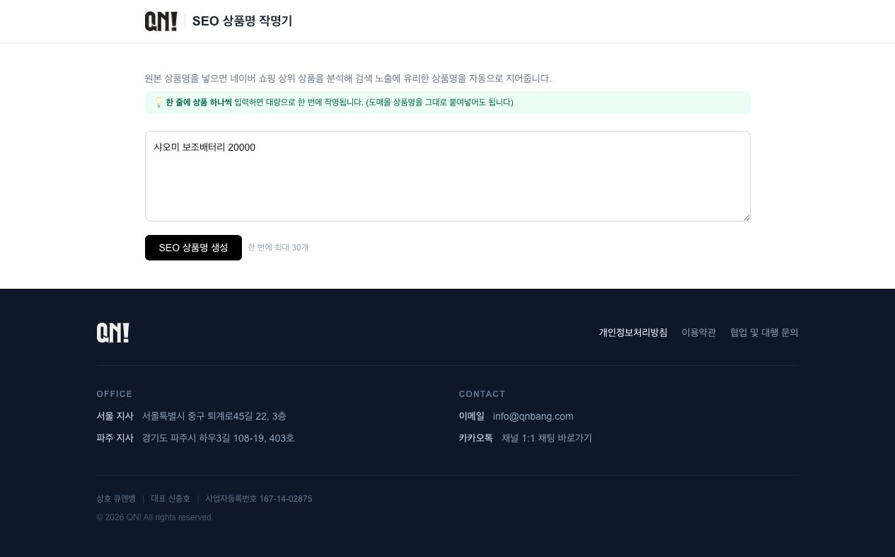

1. 카카오톡 봇
카카오톡 메시지를 업무 자동화로 전달하고, 회의록·할 일 정리와 커뮤니티 운영 흐름에 사용합니다. 실제 대화는 개인정보 보호를 위해 공개하지 않습니다.
면접 시 실제 흐름 시연 가능
실제 운영 구조와 공개 가능한 제품 화면만 정리했습니다. 고객명, 대화 원문, 매출·지출 데이터, 접근 정보는 포함하지 않았습니다.
카카오톡 메시지를 업무 자동화로 전달하고, 회의록·할 일 정리와 커뮤니티 운영 흐름에 사용합니다. 실제 대화는 개인정보 보호를 위해 공개하지 않습니다.
일정·지출·과업 입력을 해석해 캘린더와 업무 원장에 연결합니다. 일정 관리, 지출 기록, 과업 등록을 하나의 메시지 흐름으로 운영합니다.
자유 형식의 조건을 구조화해 견적·계약 문서 생성 흐름에 연결합니다. 문서 원본에는 거래 조건이 있어 공개하지 않습니다.
촬영 원본 전사, 무음·NG 구간 정리, 컷 목록, 자막, Premiere XML 시퀀스 생성을 하나의 편집 파이프라인으로 구성했습니다.
작업 로그, 프로젝트, 할 일, 일정, 재무 확인을 한 화면에서 운영합니다. 내부 운영 화면은 로그인 보호를 유지합니다.

운영 자동화의 소스 저장소는 내부 비공개로 유지합니다. 인증 정보와 고객 데이터가 포함될 수 있는 원본을 공개하지 않고, 요청 시 비식별 코드와 실행 구조를 별도로 시연합니다.
모든 공개 화면과 자료는 고객명·대화 원문·매출·지출·인증 정보를 제외한 범위입니다.